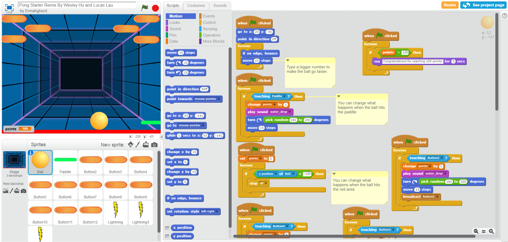
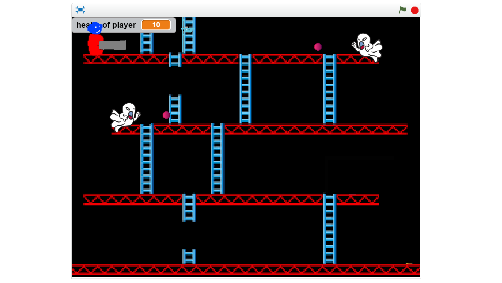
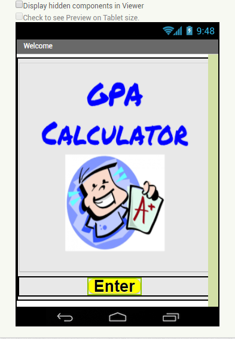
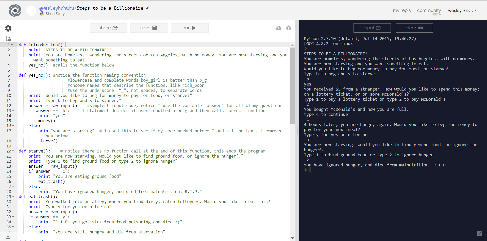
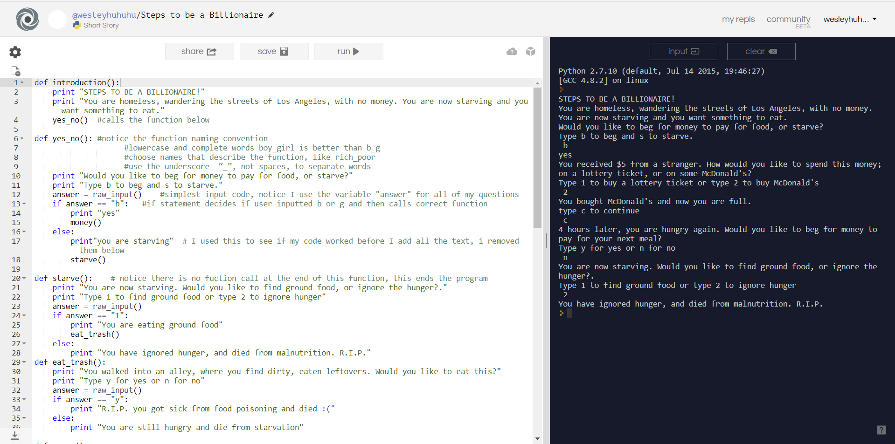

This is my Portfolio Page!


This is how my Scratch Remix looks like!
The project is basically a game of Pong. Everytime the ball hits the paddle or a block, you get a point!
This is my Scratch Project and it's a game similar to mario, and you kill the ghosts and the boss at the end!
My partner, Milo Chang, and I created a project on MIT AppInventor where we created an app that allows an user to calculate his or her GPA based on their grades. There are 3 other features in the app, which are to option to play music, displaying motivational quotes to motivate you, and a web browser to help you learn subjects. The motivational quotes will randomly show a quote everytime the user clicks the "get new quote" button. For the GPA Calculator, the user can choose the AP class checkbox if the class is and AP class and it will weigh the GPA. For the music player, there are pause, resume, next, and previous button. The web browser we added lets the user surf khan academy and also lets the user read articles. However, the web browser on AppInventor has no video playback, and only has audio.
 
